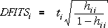

Change in least squares coefficients
A second measure of influence looks at how deletion of each point affects the regression coefficients,
High influence points correspond to large differences.
Illustration
A data set with a single high-leverage point is shown in the scatterplot on the left below.
Click on any point to see how the least squares coefficients change when it is deleted from the data set. The scatterplot on the left shows how the intercept changes.
Select Change in slope from the pop-up menu and repeat. Clicking on a point now shows the resulting change in the least squares slope.
Combining the differences
Although we could examine separately the influence of each point on the slope and intercept, it is usual to combine the two differences to give a single measure of influence called Cook's D. Although its formula in terms of the differences is hard to write and explain, it can also be written as,
so it depends on the leverage and a kind of residual (the standardised residual).
Significance would be equivalent to comparing ri with ±2 and ±3, but that is not the purpose of influence statistics. They are evaluated to assess whether one or two data points are exceptionally important.
Relationship between Cook's D and DFITS

Since the two types of residuals, ti and ri, are expected to be similar if the linear regression model holds,
The two influence measures are related and both depend on both leverage and a residual, so
Both high leverage and a large residual are needed to make a point influential.
Guidelines for Cook's D
The guideline for high influence based on DFITS,
translates roughly into a guideline for D,
Again, we are not doing a hypothesis test and this inequality does not correspond to any significance level. It may however indicate that some data points should be given further investigation.